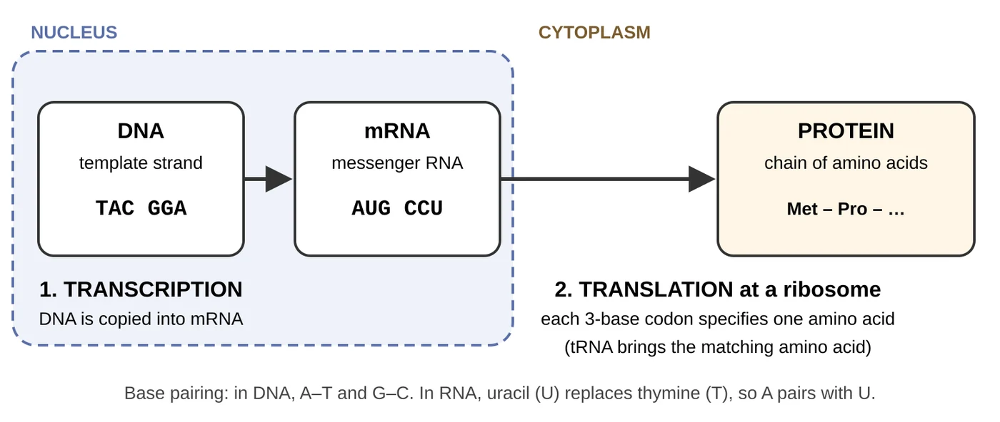
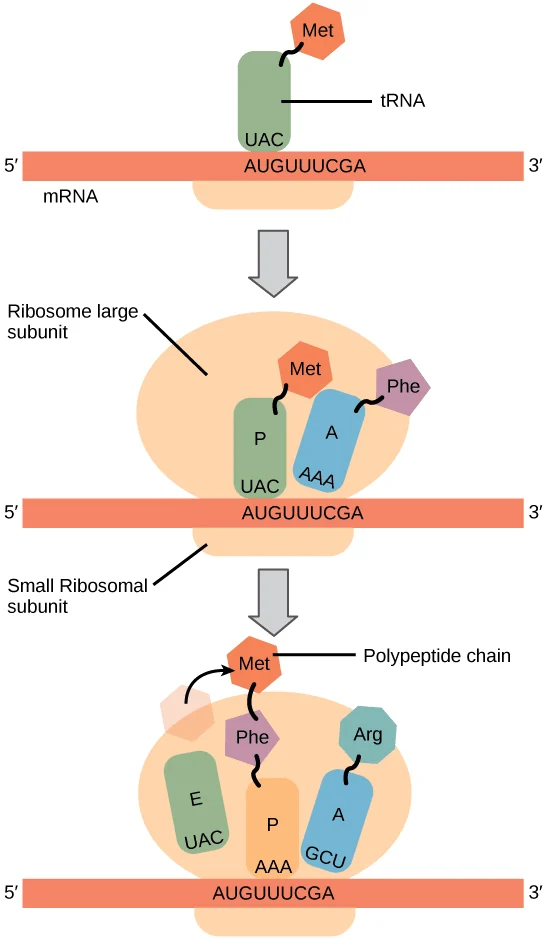

DNA, RNA and Protein Synthesis
TEAS objective S.2.2 · Biology
What the TEAS expects: you can describe the structure of DNA, pair complementary bases, tell DNA from RNA, and explain how a gene's sequence becomes a protein through transcription and translation.
1. The structure of DNA
- DNA is built from nucleotides. Each nucleotide has three parts: a sugar (deoxyribose), a phosphate, and a nitrogen base.
- DNA and RNA are nucleic acids. Two strands of DNA twist into a double helix. Sugar and phosphate form the sides of the "ladder"; base pairs form the rungs, held together by hydrogen bonds.
- Base-pairing rules in DNA: A pairs with T, G pairs with C. Bases that pair are called complementary.
- A gene is a stretch of DNA with the instructions for one protein (or a functional RNA). Genes are how traits are inherited.
- Size order: chromosome (one long DNA molecule) > gene > codon (3 nucleotides) > nucleotide.
Check 1: One DNA strand reads G-A-T-T-C. What is the complementary strand, lined up base by base? Answer at the bottom of the page.
2. DNA vs RNA
Swipe the table sideways to see every column. →
| DNA | RNA | |
|---|---|---|
| Sugar | Deoxyribose | Ribose |
| Strands | Two (double helix) | Usually one |
| Bases | A, T, G, C | A, U, G, C (uracil replaces thymine) |
| Where | Mainly the nucleus | Made in the nucleus, works mainly in the cytoplasm |
| Job | Stores genetic information | Carries and uses it to build proteins |
Three kinds of RNA:
- mRNA (messenger): carries the gene's code from the nucleus to a ribosome.
- tRNA (transfer): brings the matching amino acid to the ribosome.
- rRNA (ribosomal): part of the ribosome itself.
3. From gene to protein

Tap or click the figure to open it full size.
Step 1: Transcription (in the nucleus). An enzyme, RNA polymerase, reads one DNA strand (the template strand) and builds a complementary mRNA. Same pairing rules, except A in DNA pairs with U in RNA.
Step 2: Translation (at a ribosome in the cytoplasm). The ribosome reads the mRNA three bases at a time. Each three-base unit is a codon, and each codon specifies one amino acid. tRNA molecules carry amino acids; each has an anticodon that pairs with the codon. The ribosome links the amino acids into a chain, which folds into a protein.
- The start codon is AUG (it codes for methionine).
- Stop codons (UAA, UAG, UGA) end translation.
- The order of bases in the gene sets the order of amino acids, which sets the protein's shape, and shape determines its function.

Tap or click the figure to open it full size.
Memory hook: transcription keeps the same "language" (nucleic acid → nucleic acid, like transcribing notes). Translation changes language (nucleic acid → protein).
Check 2: A DNA template strand reads T-A-C. What mRNA codon is made from it? Answer at the bottom of the page.
4. Mutations
A mutation is a change in the DNA sequence.
- A substitution swaps one base. It may change one amino acid, change nothing (several codons code for the same amino acid), or create an early stop codon.
- An insertion or deletion of one or two bases shifts how every later codon is read (a frameshift), usually wrecking the protein.
Because sequence determines shape and shape determines function, a changed protein may not work. Sickle cell disease comes from a single-base substitution in a hemoglobin gene.
Common traps
- Putting T in RNA. RNA has uracil (U) instead.
- Swapping the locations. Transcription happens in the nucleus; translation happens at ribosomes.
- Confusing replication and transcription. Replication copies DNA into DNA before cell division; transcription copies a gene into mRNA.
- Reading single bases as codons. A codon is three bases.
Learn it properly
- DNA structure: OpenStax Concepts of Biology, Section 9.1 The Structure of DNA: OpenStax (opens in a new tab)
- Transcription: Section 9.3 Transcription: OpenStax (opens in a new tab)
- Translation: Section 9.4 Translation: OpenStax (opens in a new tab)
Check answers
- C-T-A-A-G. G pairs with C, A with T, T with A.
- AUG. T pairs with A, A pairs with U (RNA has no T), and C pairs with G. AUG is the start codon.
ESCC TEAS Prep · Original study material written for Eastern Shore Community College. Figures from OpenStax, Concepts of Biology, licensed CC BY 4.0.